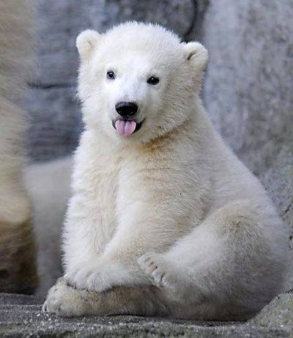

Beruang kutub memiliki banyak nama berbeda seperti beruang laut, es, rusa laut putih, dan yang
paling keren Lord of the Arctic. Pada tahun 1774, Constantine John Phipps menjadi orang pertama
yang menggambarkan beruang sebagai spesies yang berbeda. Nama ilmiah yang dipilih, Ursus maritimus,
secara harfiah berarti beruang maritim.